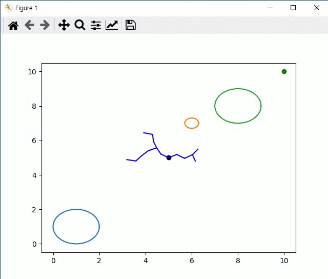

|
Dohyeok Lee I'm a first year Ph.D. student at Cognitive Machine Learning Laboratory, advised by Jungwoo Lee, in ECE at Seoul National University(SNU). Previously, I received my M.S. in ECE from SNU in 2024, B.S. in EE from KAIST in 2020. Research Keywords: Robot Learning, Robotics, Learning from Demonstration, Reinforcement Learning. Short Statement: I have various experience in building real robot systems from personal projects to start-up companies. From these experiences that taught me about the limitations of classical robotics theory, I begin to research about robot learning and reinforcement learning. Currently, I'm working on robotic manipulator with LfD and RL to build a foundation model for robotic manipulation. Email / CV / Google Scholar / Github / LinkedIn |
{kind=link}
ResearchI'm interested in robot learning, robotics, and reinforcement learning. I love to solve real-world bottleneck problems of robotics with machine learning, while I'm also interested in applying mathematical theoreties to robot learning. Some papers and projects are highlighted. |
 
|
Current Research Interest
-Researching policy architecture with better generalization for LfD |
|
SPQR: Controlling Q-ensemble Independence with Spiked Random Model for Reinforcement Learning
Dohyeok Lee, Seungyub Han, Taehyun Cho, Jungwoo Lee NeurIPS, 2023 arXiv / code We propose SPQR, independence regularization for ensemble Q-learning using random matrix theory and spiked random model. SPQR shows overestimation bias reduction and better computational efficiency in ensemble Q-learning. |
|

|
ARTificial Expressions: Human-Robot Interactive Drawing
Yejin Kim, Dohyeok Lee CVPR Demo, 2023 (Best Demo Awarded) code We propose ARTE, human-robot interactive drawing system. To handle human intervention while robot drawing, we implement CLIP-based reward system to judge the current drawing state. For robot policy, we use brush stoke simulation and RL trained on various datasets. |
 
|
Control of Furuta Pendulum with Reinforcement Learning
Dohyeok Lee, Usama Mohammad, Dong Eui Chang ICCAS, 2019 video Furuta pendulum control system(swing up, balancing) using DDPG and PPO with sim2real and in-the-wild training |
Work Experience |
|
Robotics Engineer
D.Hive(start-up), Daejeon, Korea 2020.09 - 2021.04
Developing autonomous delivery robot |
|
|
Robotics Engineer Intern
Crazing Lab(start-up), Pangyo, Korea 2019.06 - 2019.08
Developing autonomous filming robot |
Project Experience*DC: Domestic Conference, *O: Open Source Contribution, *P: Personal Project, *R: Research Project |
|
|
[W] Part-time Engineer
Project working with Zer01ne(Hyundai Motor Company), 2021 Collaborator: Minyoung Kim, Yejin Kim, Dohyeok Lee, Junyoung Kim, Sunho Chang video1 / video2 Developing AR system integrating robot Spot with Unity, ROS |
 
|
[DC] Minimum distorsion embedding for RL
Taehyun Cho, Dohyeok Lee, Jungwoo Lee KICS Winter Conference, 2023 preprint / code We propose isometric regularization for RL to minimize distorsion of latent space embedding |
 |
[O] Nonlinear Controller (★19)
Open Source Contribution, 2019 code Implement nonlinear control (robust, adaptive, sliding mode) algorithms on two-arm manipulator simulator |
 |
[P] Autonomous Mobile Robot
Personal Project working with robotics club MR, KAIST, 2018 Collaborator: Dohyeok Lee, Inyub Kim, Yongmin Lee, Dokyun Lee video Developing autonomous mobile robot with YOLO, Tmap API, GPS and compass sensor, etc. |
|
[R] 3D pose estimation
Research Project working with RCV KAIST, 2018 Collaborator: Dohyeok Lee, Jaekook Hyun Developing 3D pose estimation algorithm for hubo picking challenge |
|
|
[O] IMPALA
Open Source Contribution, 2024 code Implement IMPALA(Scalable Distributed Deep-RL with Importance Weighted Actor-Learner Architectures) in distributed machine system with ray, redis, UDP |
|
|
[P] Mobile Humanoid
Project working with SNU Course, Actuation and Sensing Mechanisms for Robots, 2024 Collaborator: Dohyeok Lee, and 23 students Developing wheel-based humanoid for moving and picking object |
|
|
[DC] Separated batch ensemble DQN
Dohyeok Lee, Jungwoo Lee KICS Winter Conference, 2023 code We propose separated batch ensemble DQN for diversification of ensemble using separated batch for Bellman Q-target |
|

|
[O] Genetic Algorithm for Surface Decomposition
Open Source Contribution, 2022 code Implement genetic algorithm for earth surface decomposition with arbitrary basis function |
|
[O] EKF (★11)
Open Source Contribution, 2021 code Implement EKF(Extended Kalman Filter) for sensor fusion of GPS and IMU data with Kitti dataset |
|
|

|
[O] RRT
Open Source Contribution, 2021 code Implement RRT(Rapid Random Tree) algorithms |

|
[P] Vender
Personal Project working with Art Center Nabi, 2020 Collaborator: Minyoung Kim, Dohyeok Lee, Seonguk Seo, Taewon Kang, Dahye Lee, Daeun Kim video Creating A.I media artwork with A.I based emotion recognition and autonomous vending machine system |
 |
[DC] Simulator and Reinforcement Learning Algorithms for Surveillance/Reconnaissance
Changsik Lee, Dohyeok Lee, Dong Eui Chang KIMST Conference, 2020 Developing simulation environment for surveillance/reconnaissance and reinforcement learning algorithms for surveillance agent |

|
[P] Hand-shape Manipulator with Teleoperation
Personal Project working with robotics club MR, KAIST, 2017 Collaborator: Dohyeok Lee, Jaemin Cho, Jinsub Lee, Kiheon Sung Developing hand-shape manipulator and glove-shape interface for teleoperation |

|
[P] Maker-based Mobile Robot
Personal Project working with robotics club MR, KAIST, 2016 Collaborator: Duckyu Choi, Hwijoon Lim, Dohyeok Lee Developing mobile robot for maker-based localization and mapping |
Miscellanea |
| Reviewer: CoRL 2024 W, ITW 2024 |
|
template adapted from here. |